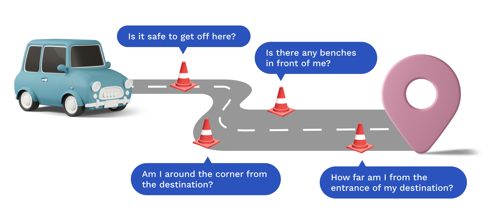
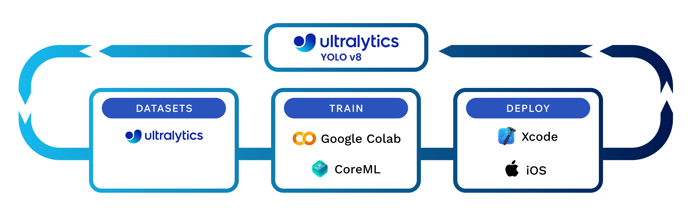

Overview
Brief
SafeStep은 라이드셰어를 이용하는 시각 장애인의 이동성과 내비게이션 경험을 향상 시키기 위해 개발된 모바일 애플리케이션입니다.
이 앱은 실시간 내비게이션 및 장애물 감지 기능을 제공하여 사용자가 라이드셰어 하차 지점에서 최종 목적지까지 안전하고 독립적으로 이동할 수 있도록 지원합니다.
Duration
Sept 2023 - May 2024
Role
Researcher, iOS Developer
Skills
- User Interviews
- Usability Testing
- Expert Consultations
- Digital Prototyping
- Machine Learning Model Training
- Accessibility Testing
- App Development
Tools
- Swift (Xcode)
- Google Colabs
- CoreML
- Python
- Figma
Problem
시각 장애인들은 라이드셰어 서비스를 이용할 때 상당한 어려움을 겪습니다
시각 장애가 있는 미국인은 2천만 명이 넘습니다. 이들은 차량에서 최종 목적지로 이동하는 동안 낯선 환경을 탐색하고 물리적 장애물을 피하는 데 어려움을 겪고 있습니다. 또한 라이드셰어 회사는 종종 ADA 요구 사항을 회피하여 이러한 여행객의 접근성 문제를 악화시킵니다.
Motivation
시각 장애가 있는 라이드셰어 사용자의 즉각적인 필요성 이해
SafeStep은 시각 장애인을 위한 자율주행차 기술의 광범위한 함의에서 영감을 받았습니다. 기존의 라이드셰어 환경에서 즉각적인 필요성을 인식하고 현재의 경험을 향상시키는 데 초점을 맞췄습니다. 이러한 사용자 중심 접근 방식은 SafeStep이 실제 문제를 효과적으로 해결하여 사용자의 안전과 독립성을 모두 향상시킬 수 있도록 보장합니다.
Pain Points
라이드셰어 서비스를 이용할 때 시각 장애인들의 여정 지도
1. 차량 예약
스크린 리더 기능과 음성 명령 옵션이 있는 앱을 통해 차량 예약이 어려움.
2. 차량 승차
도착 시 차량을 찾는 데 어려움.
3. 탑승중
여정, 현재 위치, 그리고 도착 예정 시간에 대한 청각적 업데이트 부족.
4. 차량 하차
하차 위치의 안전성과 정확성에 대한 불확실성.
최종 목적지까지 이동하는 데 어려움.
Target Audience
SafeStep은 이런 어려움을 겪고 있는 시각 장애인들을 위해 특별히 설계되었습니다
커뮤니케이션 장벽
언어 차이로 인해 운전자에게 필요한 사항을 전달하는데 어려움이 있습니다.
안전 문제
차량에서 하차한 후 낯선 환경을 탐색하고 장애물을 피하는 것에 어려움이 있습니다.
제한된 기술 지원
불충분한 지원은 타인에 대한 의존을 강요하여 독립성을 저해합니다.
독립의 필요성
도시를 스스로 탐색하며 자율성을 추구합니다.
Research Question
시각 장애가 있는 라이드셰어 서비스 사용자들이 차량에서 최종 목적지까지의 여정을 더 즐겁고 안전하고 신뢰할 수 있게 만들 수 있는 방법은 무엇일까요?
SafeStep은 시각 장애가 있는 사용자를 위해 하차 지점에서 최종 목적지까지의 여정을 개선하는 방법에 대한 중요한 문제를 해결하는 것을 목표로 합니다. SafeStep은 첨단 기술과 사용자 중심의 디자인 접근 방식을 활용하여 신뢰할 수 있고 즐거운 여행 경험을 제공하여 사용자의 안전과 독립성을 보장합니다.
Insight 1
접근성 문제로 인한 심각한 어려움
시각 장애가 있는 사용자들은 특히 차량에서 최종 목적지로 이동할 때 상당한 어려움을 겪습니다. 이러한 격차는 장애물 감지 및 내비게이션에 대한 적절한 기술 지원이 부족하기 때문입니다.
Insight 2
사용자 피드백은 신뢰할 수 있는 내비게이션 지원의 필요성을 강조
시각 장애인 사용자와의 인터뷰 및 설문조사 결과, 실시간으로 신뢰할 수 있는 내비게이션 지원의 필요성이 부각되었습니다. 사용자들은 안전과 독립에 대한 요구를 적절히 해결하지 못하는 현재의 솔루션에 불만을 표출했습니다. 또한, 도시를 탐색하는 데 있어 누구의 도움도 받지 않고 완전한 독립성을 추구한다고 강조했습니다.
Insight 3
통계 자료를 통한 SafeStep과 같은 솔루션의 필요성 강조
연구에 따르면 미국인의 8%가 시각 장애를 가지고 있으며, 시각 장애인이나 저시력자의 라이드셰어 사용률은 다른 장애를 가진 사람들에 비해 두 배에 달합니다. 이는 SafeStep과 같은 솔루션의 필요성을 강조합니다.
라이드셰어 사용률
7.1%: 시각 장애 및 저시력 응답자
3.5%: 기타 장애 응답자
시각 장애로 인한 주요 이동 문제 두 가지
- 장애물 회피 및 하차 지점 감지
- 내비게이션
Design Values
SafeStep의 개발을 이끄는 핵심 원칙
1. 통합성 (Integrated)
기존 플랫폼과 매끄럽게 통합되어 사용자가 편리하고 직관적인 경험을 할 수 있도록 보장합니다.
2. 독립성 지원 (Supports Independence)
사용자가 자율적으로 이동할 수 있도록 하여 스스로의 자립심을 높입니다.
3. 편의성 (Convenient)
추가 기기가 필요 없이 실시간으로 이해하기 쉬운 피드백을 제공합니다.
4. 비용 효율성 (Cost-Effective)
저렴한 기술을 보장하며 고가의 보조 장치가 필요 없도록 합니다.
Research
전문가 상담을 통해 실제 요구 사항에 맞는 디자인 기반 구축
SafeStep의 개발은 광범위한 디자인 연구와 Perkins School for the Blind, the Carroll Center for the Blind, Harvard Digital Accessibiligy Services와 같은 기관의 전문가들과의 상담을 바탕으로 이루어졌습니다. 이러한 상담은 시각 장애 사용자의 요구에 대한 귀중한 통찰력을 제공하여 SafeStep의 디자인이 사용자 중심이며 실생활 문제를 효과적으로 해결할 수 있도록 보장했습니다.
Solution
시각 장애가 있는 사용자들을 위해 실시간 내비게이션 및 장애물 감지
SafeStep은 최첨단 기술을 활용하여 기능을 제공합니다. 이 앱은 실시간 객체 감지를 위해 YOLO v8 모델과 같은 머신 러닝 모델을 사용합니다. GPS 내비게이션이 통합되어 사용자가 하차 지점에서 최종 목저지까지 안내받을 수 있도록 안내합니다. 앱 개발 과정에서는 Google Colab을 활용한 모델 학습과 Xcode를 이용한 앱 개발이 이루어졌으며, iOS 기기에서 성능을 최적화하기 위해 Apple의 CoreML 프레임워크와 통합되었습니다.
Key Features
고급 기능을 통해 안전성과 독립성 향상
SafeStep은 첨단 기술과 사용자 중심 디자인 원칙을 통합하여 라이드셰어 하차 지점에서 최종 목적지까지 안전하고 신뢰할 수 있으며 편안한 여정을 보장합니다. 아래는 시각 장애인 사용자에게 필수적인 도구가 되는 주요 기능들입니다.
객체 감지 (Object Detection)
최신 머신 러닝 모델을 활용하여 실시간으로 장애물을 감지해 사용자의 안전을 보장합니다.
멀티모달 피드백 (Multimodal Feedback)
오디오, 햅틱, 음성 피드백을 결합하여 사용자에게 장애물과 내비게이션 신호를 알려줍니다.
문 감지 (Door Detection)
최종 목적지 입구를 정확히 안내하여 사용자가 올바른 위치에 도달할 수 있도록 돕습니다.
음성 내비게이션 (Voice Navigation)
시각 장애 사용자들에게 맞춤형으로 하차 지점에서 최종 목적지까지 상세한 음성 지원 안내를 제공합니다.
User Journey
라이드셰어 경험을 처음부터 끝까지 개선
1. 목적지 도착 알림 (Destination Arrival Alert)
사용자가 하차 지점에 가까워질 때 알림을 제공합니다.
2. 즉각적인 장애물 알림 (Immediate Obstacle Alerts)
실시간 햅틱 피드백은 사용자에게 주변 장애물을 알려줍니다.
3. 고급 내비게이션 신호 (Advanced Navigation Cues)
음성 내비게이션은 최종 목적지까지 자세한 안내를 제공합니다.
4. 문 감지 활성화 (Door Detection Activated)
햅틱 및 음성 피드백은 사용자를 올바른 문으로 안내합니다.
Prototype
SafeStep의 기능을 실제로 경험해보세요
SafeStep 프로토타입은 시각 장애 사용자들을 위한 원활하고 안전한 내비게이션 경험을 제고하기 위해 앱의 기능들이 어떻게 조화를 이루는지 보여줍니다. 다음 갤러리와 인터랙티브 데모는 앱의 인터페이스, 기능 및 사용자 경험에 대한 심층적인 정보를 제공합니다.

Testing and Validation
종합적인 테스트를 통해 실제 효과 보장
사용자 테스트 및 피드백 (User Testing and Feedback)
SafeStep은 시각 장애인을 대상으로 광범위한 사용자 테스트를 거쳐 효과성과 사용 편의성을 검증했습니다. 인터뷰, 설문조사, 실사용 시나리오를 통해 피드백을 수집하며 명확하고 간결한 음성 피드백, 직과적인 내비게이션, 신뢰할 수 있는 장애물 감지의 중요성이 강조되었습니다. 이 피드백은 앱의 기능을 개선하고 전반적인 사용자 경험을 향상하는 데 중요한 역할을 했습니다.
기술 검증 (Technical Validation)
객체 감지를 위한 YOLO v8 모델과 내비게이션을 위한 GPS 통합과 같은 SafeStep의 기술적 측면은 다양한 환경에서 엄격하게 테스트되었습니다. 이를 통해 앱이 다양한 조건에서도 안정적으로 작동하고 사용자에게 정확한 실시간 정보를 제공할 수 있었습니다.
반복적인 개선 (Iterative Improvements)
사용자 피드백을 기반으로 여러 버전의 앱이 개발되었습니다. 각 버전은 문제점이나 개선해야 할 부분을 확인하기 위해 테스트되었습니다. 테스트를 통해 얻은 주요 인사이트는 객체 감지의 정확성, 멀티모달 피드백의 응답성, 음성 내비게이션 지시의 명료성이 개선되었습니다.
버전 1: 픽처 인 픽처 모드 (Picture-in-Picture Mode)
지도를 픽처 인 픽처 모드로 띄웠을 때 사용자의 주의를 분산시켜 실시간 내비게이션 신호에 집중하는 데 방해가 되었습니다.
버전 2: 화면 중앙부 집중 영역 (Middle Third Focus Area)
화면 중앙부의 집중 영역을 강조하고 빨간색으로 표시하는 방식은 원거리의 객체 감지를 개선했지만 빨간색에서 오는 지속적인 진동과 긴박감은 도움이 되기보다는 산만했습니다.
Reflection
접근성 프로젝트에서 공감과 사용자 중심 디자인의 중요성
사용자 요구 이해 (Understanding User Needs)
SafeStep 프로젝트에서 얻은 가장 중요한 학습 중 하나는 시각 장애 사용자들이 직면한 어려움과 필요를 깊이 이해하는 것이 중요하다는 것었습니다. 사용자와 직접 소통하는 과정은 앱의 디자인과 기능에 영향을 미치는 귀중한 인사이트를 제공했습니다.
사용자 중심 디자인 강조 (Emphasizing User-Centered Design)
사용자 피드백을 기반으로 한 반복적인 디자인 과정은 사용자 중심 접근 방식의 가치를 강조했습니다. SafeStep은 실제 테스트를 기반으로 앱을 개선함으로써 사용자들의 요구를 진정으로 충족하는 솔루션을 제공할 수 있었습니다.
기술적 및 개인 성장 (Technical and Personal Growth)
SafeStep을 개발하면서 특히 머신러닝과 모바일 앱 개발 분야에서 기술을 발전시킬 수 있는 기회를 얻었습니다. 또한 이 프로젝트를 통해 접근 가능한 디자인의 영향력과 포용적인 기술을 만드는 데 있어 공감과 중요성을 깨달으면 개인적으로도 성장할 수 있었습니다.